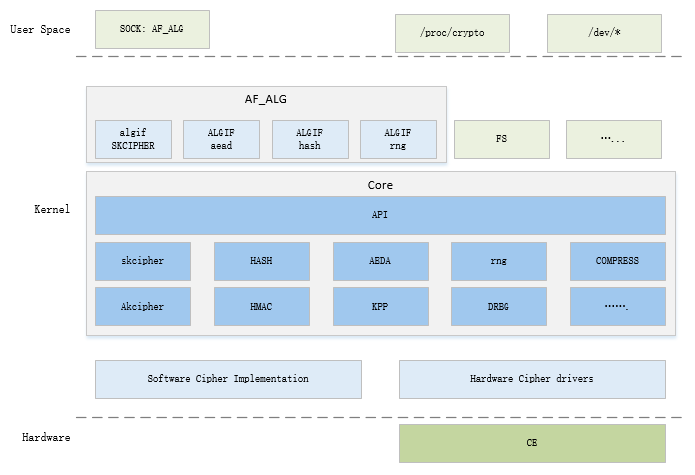

模块架构
15 Jan 2024
CE 模块对接内核加密子系统。
图 1. CE 与内核加密子系统
CE <—> Crypto
subsystem <—> User space 之间的层次关系如下图所示。
Linux 内核加密子系统由几个部分组成
- 核心部分。该部分实现了加密子系统的主要核心功能，包括
-
主要的数据结构和管理
-
所支持的算法类型
-
以及不同算法之间进行组合的模板等
对下对接各种算法的具体软硬件实现，对上提供对应的 API，为内核其他模块提供服务。
-
- 算法实现部分，分为
-
软件的基本算法实现
-
硬件算法加速器的驱动。
-
- 用户空间接口部分内核加密子系统通过 Socket 接口向用户空间程序提供服务
-
AF_NETLINK 接口，提供关于加密学子系统的信息，用户态程序可以通过该接口查询当前加密子系统向用户态提供了哪些服务，以及相关算法的详细信息。
-
AF_ALG 接口，提供与具体算法进行交互的接口，用户态程序可以使用该接口对数据进行加解密等处理。
-